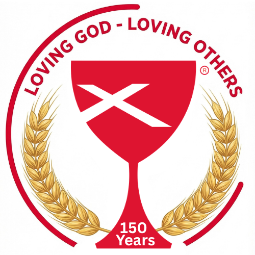

On May 18, 2026, First Christian Church (Disciples of Christ) celebrates 150 years of faith, community, and service in Harrison, Arkansas. Join us throughout the year as we reflect on our past, celebrate the present, and look toward the next 150 years.
See All Events Get Involved"Love the Lord your God with all your heart, soul, and mind... Love others as much as you love yourself."Matthew 22:37-39 (CEV)
A year-long celebration of 150 years of faith in Harrison. All are welcome at every event!
The best research available indicates that the average lifespan of a church is 80 to 120 years. Churches that survive and thrive over 100 years are the exception, not the norm. First Christian Church is one of those exceptions — and we give all the glory to God.
First Christian Church is founded in Harrison, Arkansas — the same year the town of Harrison was incorporated.
The congregation moves into a new church at the corner of West Stephenson and South Pine, with 153 members.
The church moves to its current home at 915 South Maple Street, with a dedication service on November 24.
FCC helps found Ozark Share & Care, and has been a vital part of their community ministry ever since.
150 years of Loving God and Loving Others — and we're just getting started. All are welcome at the Lord's Table.
All are welcome at every anniversary event. For more information, contact the church office.
(870) 741-5757 Send a Message